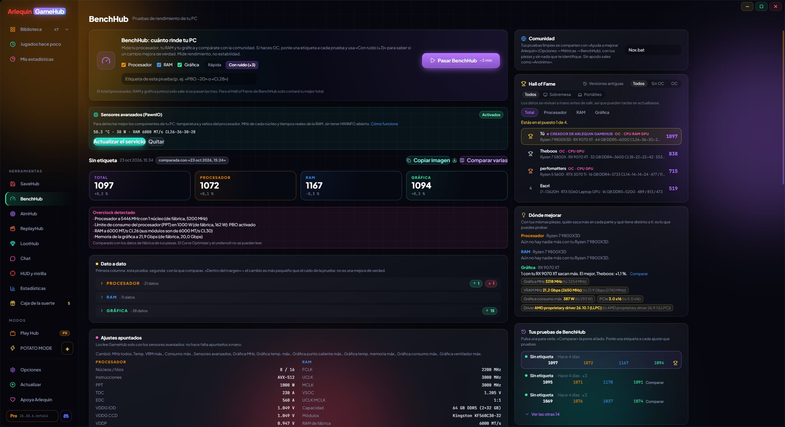

BenchHub: наскільки швидкий ваш ПК насправді
Тести процесора, RAM і відеокарти та Hall of Fame, щоб порівняти себе зі спільнотою.
BenchHub ґрунтовно тестує ваш процесор (кожне ядро, усі ядра та затримку між ядрами), вашу RAM (швидкість, затримку та їхні криві) і вашу відеокарту (та сама 3D-сцена для всіх, у 1080p, 1440p і 4K, а також PCIe і Resizable BAR) та повідомляє, чи щось їх стримує: нагрів, ліміт потужності, RAM без XMP/EXPO або відеокарта в повільному слоті. Якщо ви розганяєте, позначайте кожен тест: він сам записує ваші налаштування BIOS, каже, чи справді зміна допомагає, чи вона в межах похибки, порівнює до 4 тестів одночасно і показує, де можна покращити результат порівняно з людьми з такими самими комплектуючими.
Чисті тести, якими ви ділитеся, потрапляють до Hall of Fame з вибраним вами псевдонімом або як «Анонім».
Він визначає, чи розігнані ваші CPU, RAM або відеокарта (з окремою позначкою та фільтром у Hall of Fame), підказує, який ПК набирає 1000 балів (еталонний, без розгону), і створює зображення вашого результату, яким можна поділитися.
Під кожним результатом і кожним значенням «Порівняти» написано, що воно вимірює, а кнопка ⓘ пояснює, чому вийшло саме так; кожен процесор, RAM, відеокарта та налаштування Windows теж має власну ⓘ, що пояснює, для чого воно.
Ви можете зафіксувати вентилятори материнської плати (від 50 до 100 %) на весь тест; після нього вони повернуться до попереднього стану. Поки що лише на деяких платах MSI. Hall of Fame спершу показує людей з псевдонімом («Усі», щоб бачити й анонімних).
вкладка Стрес перевіряє, чи залишаються стабільними ваші CPU, RAM і відеокарта (багато тестів на вибір, пресети, ядро за ядром, фіксоване, змінне чи ступінчасте навантаження, криві та CSV; вона зупиняється сама, якщо щось надто нагрівається, і нічого не надсилається), а тест відеокарти також працює з DirectX 12: та сама сцена в 1080p, 1440p і 4K, з власними балами (вони не змінюють загальний результат), порівнянням із Vulkan і власною вкладкою в Hall of Fame.
у Стрес → Стан таблиця «Датчики вашого ПК» показує кожен датчик з мінімумом і максимумом, навіть без запуску тесту, а «Очистити» її спорожняє.
Як користуватися
- BenchHub — на бічній панелі, у розділі Hubs.
- Спершу закрийте ігри та важкі програми: GameHub відходить убік, поки вимірює.
- Щоб потрапити до Hall of Fame: Параметри → Приватність і дані → BenchHub.

Спробуєте?
⬇ Пряме завантаження 🛍️ Завантажити з Microsoft StoreWindows 10 і 11 (64-бітні) · Безкоштовно · Оновлюється сам